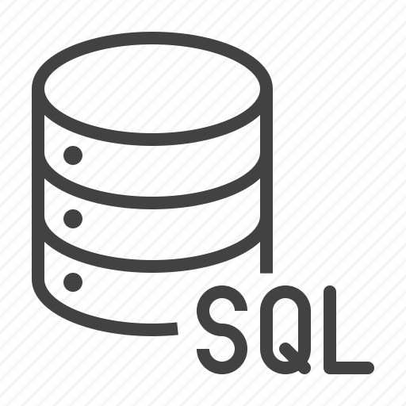

En Java se han desarrolado multiples aplicaciones como lo son controles de inventario y puntos de venta para diferentes compradores y proyectos escolares ya que es una herramienta muy utlizada actualmente por sus multiples usos y facilidad de uso.
Como bien se sabe La gestión de base de datos es un proceso complicado, que se ha racionalizado considerablemente por el lenguaje SQL. Por lo tanto se a utilizado para administrar bases de datos por su facilidad de consultas y su seguridad e integridad de los datos.
Este lenguaje es de mucha ayuda en el cual se han realizado decenas de aplicaciones para windows que van desde un punto de venta hasta un explorador de archivos funcional solo con unidades de almacenamiento extraible.